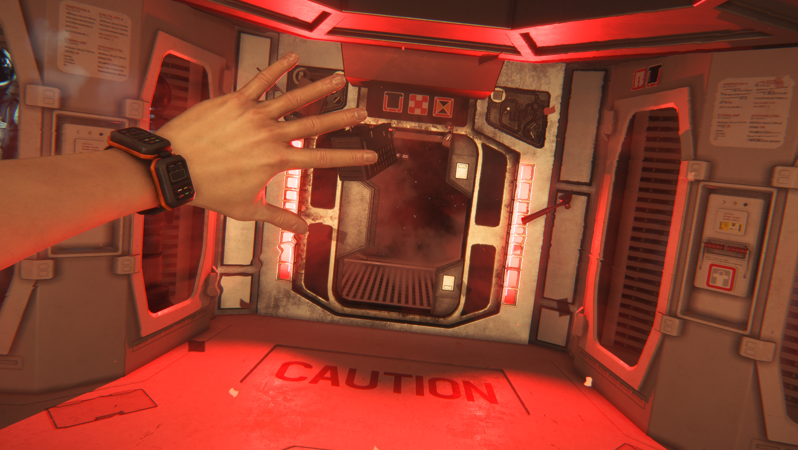

Reports

Noted Event
In the 13th Century, January of 1254, a scribeiIn St. Albans, England, a scribe documented seeing a glowing floating light. He recorded it as such, "...in serene sky and clear air, with stars shining and the Moon eight days old, there suddenly appeared in the sky a kind of large ship elegantly shaped, well equipped and of marvellous colour.
- 13th century
- 20th century
- 21th century